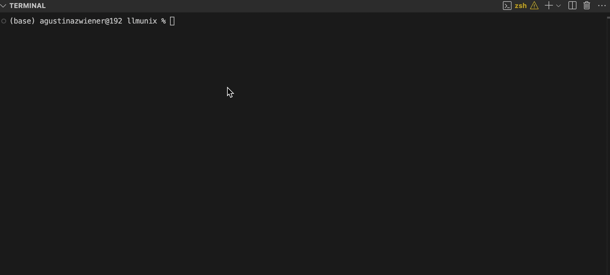

LLMunix ALPHA
An experimental Pure Markdown Operating System designed to be run by multiple AI runtime engines. Compatible with Claude Code and Claude Code sub agents, Gemini CLI, and Qwen Code. Everything is defined in markdown documents - AI runtime engines interpret the manifest file and turn these markdown specifications into a functional operating system.
⚠️ Experimental Research - This project is a research prototype and will remain permanently in alpha status.
Watch LLMunix in Action
See how LLMunix boots and executes intelligent tasks with adaptive behavior management
ü߆ Sentient State Architecture
Behavioral constraints evolve dynamically based on user sentiment, task context, and execution events. The system maintains modular state files that enable atomic updates and resumable execution.
üéØ Adaptive Behavior Management
System behavior adapts in real-time through evolving constraints. Priority shifts between speed and comprehensiveness, communication style adjusts to user preferences, and error tolerance adapts to task criticality.
üîç Intelligent Memory System
Structured experience database with YAML frontmatter enables intelligent querying of past executions. Pattern recognition across experiences guides current decision-making and optimization strategies.
üõ†Ô∏è Multi-Engine Runtime Integration
Compatible with multiple AI runtime engines including Claude Code and Claude Code sub agents, Gemini CLI, and Qwen Code. For Gemini CLI, requires the virtual tools feature from Issue #1806 with the EvolvingAgentsLabs fork.
üìö Pure Markdown + AI Runtimes
Everything is defined in markdown documents - no code generation required. Compatible AI runtime engines interpret the manifest file, turning markdown specifications into a functional operating system through their respective tooling systems.
üîÑ Training Data Generation
Automatic conversion of real execution experiences into fine-tuning datasets. Complete execution traces with behavioral context enable training of increasingly autonomous agents.
Quick Start
# Option A: Claude Code (recommended)
# Option B: Gemini CLI with virtual tools (requires EvolvingAgentsLabs fork)
# Option C: Qwen Code
2. Boot LLMunix via Your Runtime
boot llmunix
# Runtime engine reads manifest file and initializes the operating system
2. Execute Intelligent Tasks
llmunix execute: "Monitor 5 tech news sources, extract trending topics, and generate intelligence briefing"
# System adapts constraints based on API limitations, maintains intelligence value through graceful degradation
llmunix execute: "Research AI safety papers - query memory for past research patterns and apply successful approaches"
# QueryMemoryTool consults past experiences, MemoryAnalysisAgent recommends optimal strategy
llmunix execute: "Urgent: analyze this legal document for risks in 10 minutes"
# System detects urgency, adapts constraints: priority='speed_and_clarity', persona='concise_assistant'
Runtime Engine Compatibility
üöÄ Multi-Engine Support
LLMunix is a Pure Markdown Operating System compatible with multiple AI runtime engines. Choose the runtime that best fits your workflow and requirements.
- Claude Code: Full compatibility with Claude Code and sub-agent systems
- Gemini CLI: Requires virtual tools feature from Issue #1806 (EvolvingAgentsLabs fork)
- Qwen Code: Native support for Qwen Code runtime environment
- Execution: Runtime engines interpret manifest specifications into a functional OS
Architecture
LLMunix implements a modular state architecture with specialized files for different aspects of execution state:
├── plan.md # Execution steps and metadata
├── context.md # Knowledge accumulation
├── variables.json # Structured data passing
├── history.md # Execution log
└── constraints.md # Behavioral modifiers (sentient state)
Key Behavioral Modifiers:
• user_sentiment: Detected emotional state (neutral, pleased, frustrated, stressed)
• priority: Execution focus (speed_and_clarity, comprehensiveness, cost_efficiency)
• active_persona: Communication style (concise_assistant, detailed_analyst, proactive_collaborator)
• error_tolerance: Risk acceptance level (strict, moderate, flexible)
• human_review_trigger_level: Guidance threshold (low, medium, high)